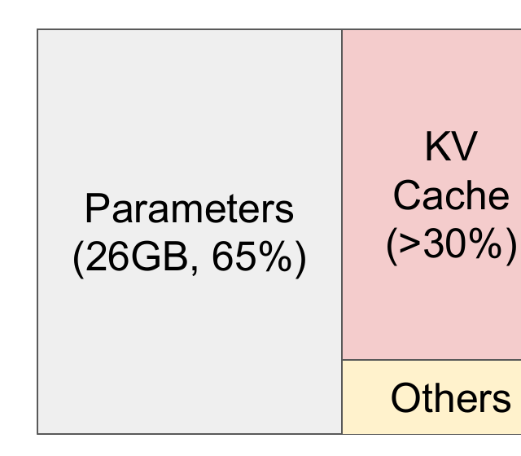
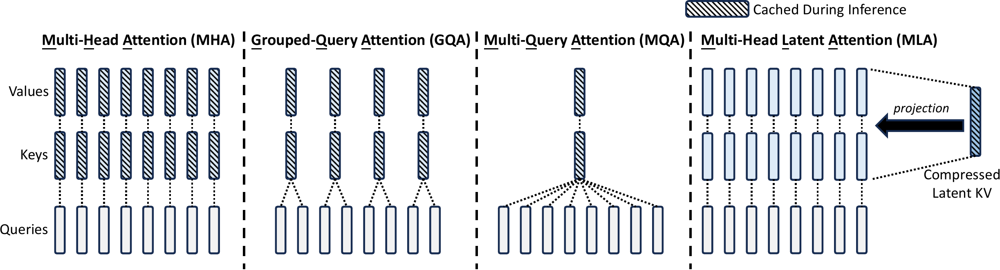
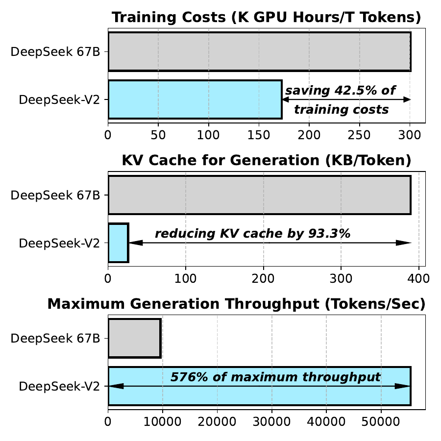
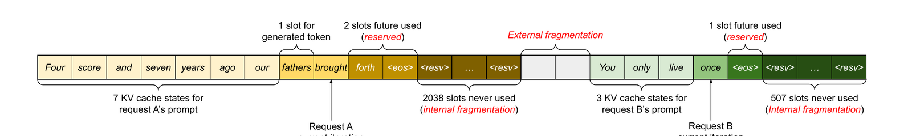
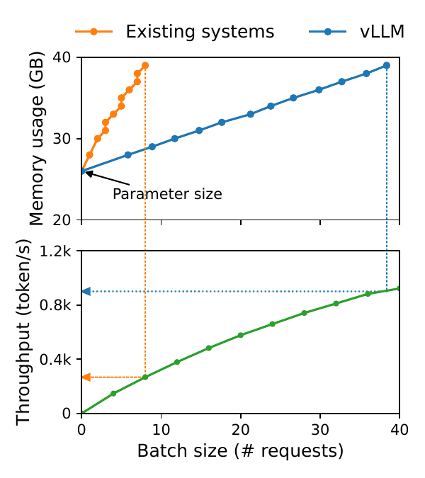
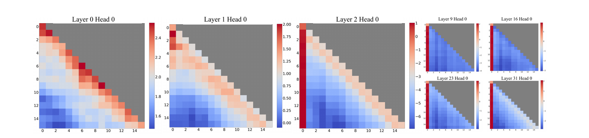
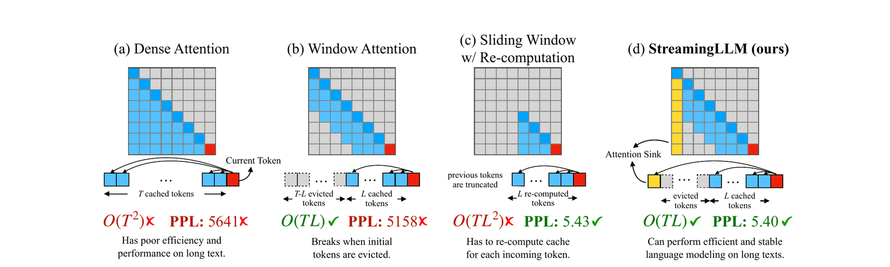

An interactive explainer
The KV Cache: why LLM inference is a memory problem
Every chat with an LLM quietly builds a tensor nobody talks about. On Llama-2-7B it grows by half a megabyte per token — by the time your conversation hits 4,000 tokens it is a 2 GB object per user, larger per active request than most of the activations, and it must be re-read in full to produce every single next token. This is the KV cache: the reason long context costs money, the reason GPUs serving LLMs run out of memory long before they run out of compute, and the object that an entire ecosystem — GQA, DeepSeek's MLA, vLLM's PagedAttention, attention sinks, prompt caching — was invented to shrink, share, page, and prune. Understand this one tensor and the economics of inference stop being mysterious.

When people picture the cost of running a large language model they picture the weights: billions of parameters, tens of gigabytes, the headline number on the model card. But weights are a fixed cost — one copy serves every user. The cost that scales with usage lives somewhere else. Every active conversation drags around its own private, growing state: for each token seen so far, for every layer, the attention keys and values that token produced. That state is the KV cache, and on a serving GPU it is the second-largest — and the only elastic — occupant of memory.
The cache sits at the center of a remarkable amount of modern LLM engineering. Why do all recent open models use grouped-query attention? The cache. Why did DeepSeek redesign the attention layer itself? The cache. What made vLLM famous overnight in 2023? Managing the cache like an operating system manages RAM. Why do API providers sell "prompt caching" at a tenth of the input price? They're selling you reuse of this exact tensor. Even the number on your bill — so many cents per million input tokens, more for long context — is, to first order, KV-cache economics passed through.
This post builds the object from scratch: why autoregressive attention forces it to exist, the three-line formula for its size (and the bandwidth argument for why it also sets speed), and then the four families of fixes — share it across heads, compress it into a latent, manage it like virtual memory, and prune it token by token. It's a companion to our FlashAttention and sparse attention posts: those are about the attention computation; this one is about the attention state.
1. Why the cache exists
Attention, stripped to its inference-time essentials. Each token $t$ in the sequence produces, at every layer and head, three vectors: a query $\vq_t$, a key $\vk_t$, and a value $\vv_t$ (each a linear map of the token's hidden state). To compute token $t$'s output, its query is scored against every key so far, and the scores mix the values:
$$ \mathrm{out}_t \;=\; \sum_{i \le t} \operatorname{softmax}_i\!\left(\frac{\vq_t \cdot \vk_i}{\sqrt{d}}\right) \vv_i . $$
The detail that creates the cache is the subscript $i \le t$: the causal mask. Token $t$ looks only backwards. That means $\vk_i$ and $\vv_i$ for a past token $i$ can never be affected by anything that comes after — the past is immutable. Compute them once, and they are correct forever.
Now watch what generation does without exploiting that. To generate token 101 you run the model on tokens 1–100; to generate token 102 you run it on tokens 1–101 — recomputing from scratch the exact same keys and values you computed a moment ago, 100 tokens' worth, at every layer. Generating $n$ tokens this way costs $O(n^2)$ full-model forward passes' worth of work. The fix is obvious once said aloud: store every $\vk_i, \vv_i$ the first time it's computed, and never compute it again. Each new token then requires exactly one new column written and one sweep of reads. That store is the KV cache.
Note the two-phase structure the animation shows, because all serving economics inherits it. Prefill (processing your prompt) is one big parallel pass — thousands of tokens' worth of matrix multiplies that saturate the GPU's compute units. Decode (generating the reply) is one token at a time: tiny matrix-vector products, plus that ever-growing sweep over the cache. Prefill is compute-bound; decode, as we'll quantify next, is memory-bound. Feel the difference caching makes first:
2. The bill: bytes and bandwidth
So what does the store cost? One token's worth of cache, for a standard multi-head transformer, is keys plus values ($2$), across every layer, across the full key/value width:
$$ \text{bytes per token} \;=\; 2 \;\cdot\; n_{\text{layers}} \;\cdot\; n_{\text{kv-heads}}\, d_{\text{head}} \;\cdot\; \text{bytes/elem}, $$
and the full cache multiplies that by sequence length and batch size. Plug in Llama-2-7B ($n_{\text{layers}}{=}32$, $32$ heads of dimension $128$, fp16): $2 \times 32 \times 4096 \times 2 =$ 512 KiB per token. A 4,096-token conversation: 2 GiB — for one user, next to 13 GB of weights. Batch 32 such users and the cache alone wants 64 GiB; the weights haven't moved. The vLLM paper's example is the same arithmetic on OPT-13B: 800 KB per token, at which point "a request may need up to 1.6 GB" and a 40 GB A100 can hold only a few dozen concurrent requests if nothing is wasted (§5 shows plenty was). This is the first law of the cache: weights scale with the model; cache scales with the model × context × users.
The cache doesn't just consume capacity — it sets speed. To produce one token, the GPU must read each weight once (matrix–vector, batch size permitting) and read the entire cache for that sequence once. Those reads come from HBM at finite bandwidth — say 3.35 TB/s on an H100 — and during decode the arithmetic per byte is so thin that bandwidth, not FLOPs, is the ceiling: $\text{tokens/s} \lesssim \text{bandwidth} / \text{bytes touched per token}$. Batching amortizes the weight reads across users; it does not amortize cache reads, because every sequence has its own. At long context, the cache becomes most of the bytes — which is why a model that streams at 100 tokens/s on a short chat crawls on a 100k-token document, and why every technique in the rest of this post, nominally about memory, is also a latency optimization in disguise.
Play with the presets and one pattern jumps out: the models differ far more in cache per token than in anything else — 512 KiB for the MHA-era 7B, 160 KiB for GQA-era Llama-2-70B's much bigger model, ~70 KiB for DeepSeek-V2's MLA despite 236B parameters. That's not an accident of scale; it's the design axis the last three years of attention research deliberately moved along. The next three sections are those moves, in order of increasing surgery.
4. Compress: DeepSeek's multi-head latent attention
GQA shrinks the cache by deleting heads. DeepSeek's multi-head latent attention (MLA, 2024) asks a sharper question: what if the per-token K/V information across all heads is low-rank — expressible in a small shared latent? Instead of caching keys and values at all, MLA caches a single compressed vector per token, $\vc_t = W^{DKV}\vh_t$, with every head's key and value reconstructed from it on demand:
$$ \vc_t = W^{DKV}\,\vh_t \in \mathbb{R}^{d_c}, \qquad \vk_t^{(i)} = W^{UK}_{(i)}\,\vc_t, \quad \vv_t^{(i)} = W^{UV}_{(i)}\,\vc_t . $$
In DeepSeek-V2, $d_c = 512$ — four head-dims' worth — standing in for what MHA would store as 128 heads × 128 dims × 2 (K and V) per layer. Two tricks make this practical rather than merely clever. First, the up-projections never actually run at decode time: because attention scores are bilinear, $W^{UK}$ can be absorbed into the query projection and $W^{UV}$ into the output projection, so the model does attention directly against the cached latents. Second, RoPE position rotations don't commute with that absorption — so MLA carries a small decoupled rotary key (dimension 64) alongside the latent, and only that part is position-rotated. Cached bytes per token per layer: $512 + 64 = 576$ numbers — which the paper notes is the cache of GQA with just 2.25 groups, while outscoring full MHA in their ablations, because the latent is trained, not truncated.


MLA is the strongest evidence for this post's thesis: at the frontier, the attention layer itself is being redesigned around the cache. DeepSeek-V3 and R1 kept MLA; the technique's spread to other model families is limited mostly by its one real cost — it's a training-time decision, not a retrofit (though "uptraining" GQA models into MLA is an active research vein). If you're wondering how far the compression direction can go, the answer of the linear-attention world — covered in our Gated DeltaNet post — is "all the way to a constant-size state," at the price of exact recall.
5. Manage: PagedAttention and the memory OS
The next fix changes nothing about the model at all. Ask instead: of the cache memory we allocate, how much holds actual tokens? Before 2023 the standard answer was shockingly little. Serving systems stored each request's cache in one contiguous buffer, pre-sized to the maximum possible length — because attention kernels wanted contiguous tensors, and because a sequence's final length is unknown at admission time. The result was every memory pathology at once:

vLLM's PagedAttention is the operating-systems classic applied verbatim: virtual memory. Chop every sequence's cache into fixed-size blocks (16 tokens each), allocate blocks on demand from a shared pool, and keep a per-sequence block table mapping logical position → physical block — the attention kernel follows the table. Just like OS paging, fragmentation collapses to at most one partially-filled block per sequence (~4% waste instead of ~70%), and — the underrated half — pages can be shared. Parallel samples from one prompt, beam-search branches, requests with a common system prompt: all point their tables at the same physical blocks, copy-on-write when they diverge. Utilization becomes throughput directly: more real tokens per gigabyte → bigger batches → 2–4× serving throughput at the same latency, with zero change to model quality. Within a year paged KV management was table stakes in every serving stack (TGI, TensorRT-LLM, SGLang, llama.cpp).

6. Shrink the numbers: cache quantization
Orthogonal to what you cache and where it lives: how many bits per number? Weights routinely survive 4-bit quantization, and the cache is the other big tensor, so the temptation is obvious. FP8 KV is by now nearly free — a 2× cut supported natively in vLLM and TensorRT-LLM with negligible quality loss. Below that it gets interesting, because keys and values fail differently. Keys have outlier channels — specific dimensions with persistently huge magnitudes (a cousin of the attention-sink phenomenon in the next section) — so quantizing keys wants per-channel scales; values have no such structure and quantize best per-token. That asymmetric recipe (KIVI is the canonical reference) pushes the cache to 2–4 bits at small perplexity cost: another 4–8× context or batch, from arithmetic alone. The compounding is the point: GQA's 8× and INT4's 4× multiply.
7. Drop tokens: windows, sinks, and heavy hitters
The most aggressive family refuses to keep the whole history at all. The blunt version is the sliding window: cache only the last $L$ tokens, evict the oldest — memory becomes constant, and Mistral-7B shipped exactly this (window 4,096) interleaved into a real model. But run a plain window on an unmodified model and something bizarre happens: the moment the first few tokens of the sequence fall out of the cache, perplexity doesn't degrade — it detonates, from ~5 to thousands.

Evicting the sinks yanks the drain out of every softmax at once — the parked probability mass has nowhere to go, activations shift out of distribution, and the model falls apart. StreamingLLM's fix is comedically small: keep the window, plus the first 4 tokens, forever. That's it. With 4 sinks + a rolling window, off-the-shelf Llama/Mistral models stream stably past 4 million tokens, at up to 22.2× lower latency than the honest alternative (recomputing the window's cache each step):

Sinks-plus-window keeps positional survivors. H2O (Heavy-Hitter Oracle) generalizes to content-based eviction: track each cached token's accumulated attention score; when over budget, evict the token that has mattered least. The empirical license is that attention is brutally sparse — a small set of "heavy hitter" tokens soaks up most of the mass — so a 20% cache budget (recent tokens + heavy hitters) matches the full model across their benchmarks, and the freed memory becomes up to 29× throughput against offloading-based baselines. The caveat for both: eviction is a bet that the future won't need what you dropped — fine for streaming chat, dangerous for "now quote paragraph 3 verbatim." Lossless tricks (paging, MLA, prefix reuse) don't carry that risk; eviction does.
8. Reuse: prefix caching and the agent era
The last fix exploits a workload fact rather than a model fact: prompts repeat. Every request to a chatbot carries the same system prompt; an agent loop re-sends an ever-growing transcript to which it appends one tool result at a time; a RAG system re-uses document chunks. The KV cache for a shared prefix is identical across all requests that share it — attention is causal, so a prefix's cache doesn't depend on what follows. So keep prefixes' caches around, keyed by content: paged blocks make this natural (SGLang's RadixAttention organizes cached blocks in a radix tree over token sequences), and a hit turns that part of prefill from a compute job into a lookup.
This is also the one cache trick you can see on a price sheet. API "prompt caching" — where re-sent prefix tokens are billed at roughly a tenth of the normal input price — is exactly this: the provider kept your prefix's KV blocks warm, skipped the prefill compute, and passed some of the savings through. For agent workloads whose transcripts grow monotonically, the effective input cost drops by near the full factor, which is a big part of why long-running agents became economically sane in 2024–25. (It also pairs with speculative decoding — one attacks prefill cost, the other decode latency.)
The modern stack & cheat sheet
None of these techniques compete; a 2026 serving stack runs essentially all of them at once, because they attack different factors of the same product:
| axis | technique | saves | cost / caveat |
|---|---|---|---|
| fewer K/V heads | GQA-8 (MQA at the extreme) | ~8× | needs (up)training; tiny quality gap |
| compress representation | MLA latent (576/token/layer) | ~13× vs MHA | training-time redesign; RoPE workaround |
| stop wasting allocation | PagedAttention blocks | ~2–4× throughput | none — pure systems win |
| fewer bits | FP8 → INT4 KV (per-channel K, per-token V) | 2–4× | small perplexity cost below 8 bits |
| fewer tokens | window + 4 sinks; H2O at 20% | unbounded ctx / 5× | lossy — dropped tokens are gone |
| don't recompute prefixes | radix/prefix caching | ~10× on repeated input | cache scheduling; privacy scoping |
Stack them and the arithmetic that opened this post inverts. Naive 2023: an MHA 7B at 4k context, contiguously allocated in fp16 — 2 GiB per user, ~70% of it wasted. Modern: a GQA-8 model in paged FP8 blocks with a warm system-prompt prefix — tens of megabytes of marginal cache per user. That two-orders-of-magnitude collapse, more than any FLOP trend, is what made 128k-token context windows and always-on agents affordable in the span of about three years.
The bottom line
The KV cache is what "having context" physically is: the model's memory of your conversation, materialized as gigabytes of key/value vectors that must be stored somewhere and re-read for every generated token. Weights are rent; cache is the utility bill that scales with use. So the field learned to shrink it four independent ways — share it (GQA), compress it (MLA), page it (vLLM), prune it (sinks, H2O) — and to stop paying twice for the same prefix. Next time a price sheet charges by input token, or a model advertises million-token context, or a paper redesigns attention "for inference efficiency," you know the tensor they're all actually talking about.